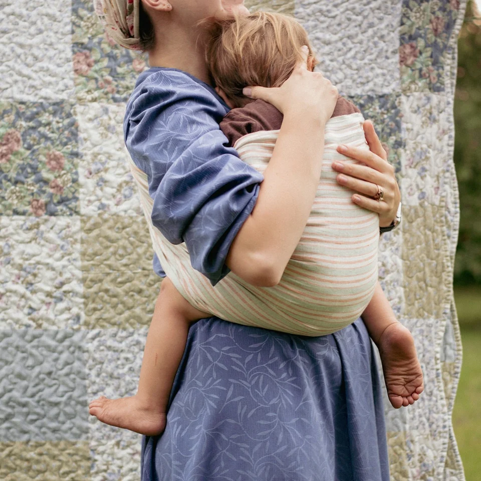
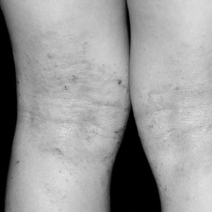
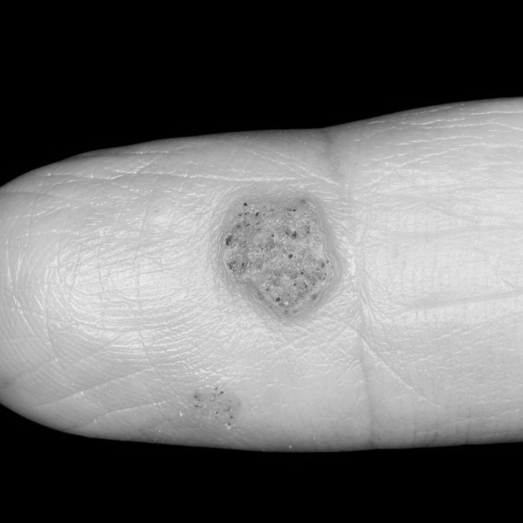
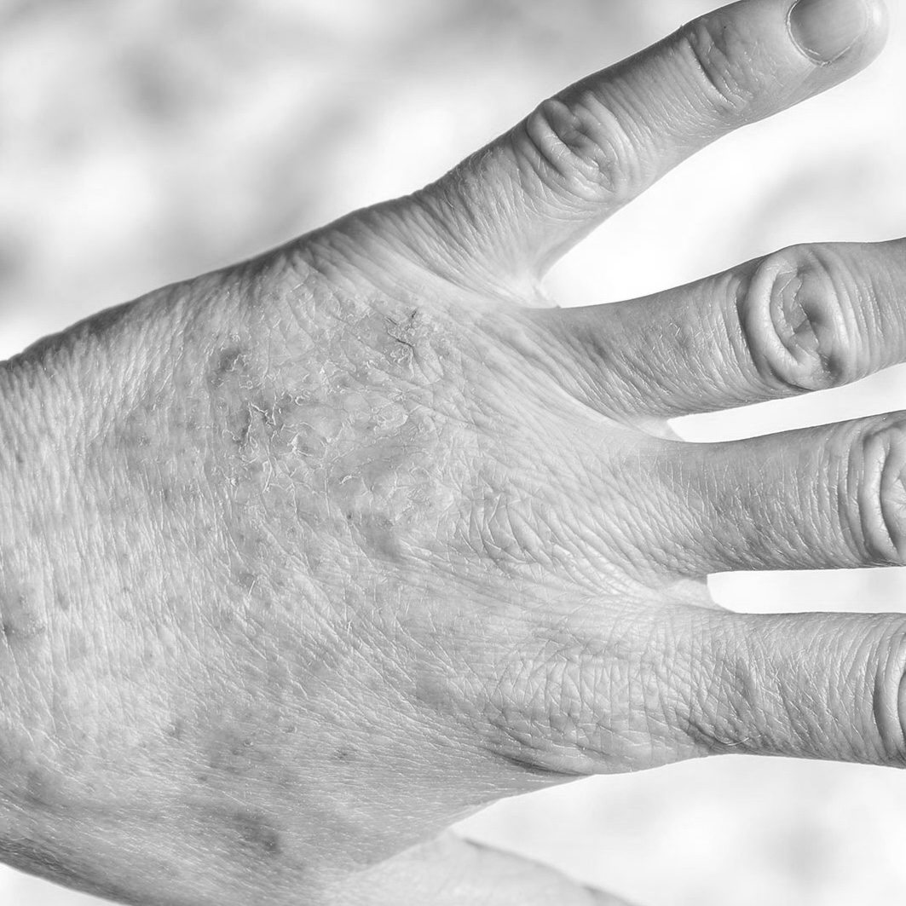

A busy
professional
- Situation
Work fills the day,
with few clinics open after hours. - Response
Puts off a visit as
work takes priority.
Interaction Design · 2024
When a clinic visit is hard to arrange, people still need help making sense of their skin concerns. Dr.Snap brings the intake conversation before the visit, using photos, symptom descriptions, and follow-up questions to provide initial guidance while keeping diagnosis and treatment with a clinician.

01 / Motivation
A skin concern can arise in the middle of a working day, far from a clinic, or while caring for a child. We explored how people could begin to understand their symptoms when a visit was difficult to arrange.
Work fills the day,
with few clinics open after hours.
Puts off a visit as
work takes priority.
Even the nearest clinic
takes time to reach.
Downplays the concern and
delays a visit.

Looks for a clinic
that can see the child quickly.
Cannot find pediatric care
without a wait.
How might people get initial guidance on a skin concern
when a clinic visit is hard to arrange?
02 / Prior Approaches
We examined remote consultation services as existing attempts to make care more accessible. Reviews collected for the project helped us understand where these approaches still fell short for users.
Review summaries adapted from 2024. Translated from Korean.
What if AI provided the initial guidance?
03 / Workflow Analysis
We had a direction: AI with symptom images and written descriptions. But concerns about reliability led us to define its role. We mapped the journey from noticing a skin concern to receiving care, looking for where AI could offer immediate support while encouraging a clinic visit.
Notice a
skin concern
Book an
appointment
Visit the
clinic
Complete an intake questionnaire
Consultation
Diagnosis &
prescription
Notice a
skin concern
Ask a
chatbot
Receive an immediate answer or diagnosis
Decide what to do without clinician review
The clinic journey offered professional assessment but required appointments and travel. Standalone AI could respond immediately, yet left users to act on answers without clinical review.
Notice a
skin concern
Visit the
clinic
Consultation
Diagnosis &
prescription
We focused on the intake questionnaire as a way to turn an initial concern into structured symptom information. Moving this step before the visit created an opportunity to ask follow-up questions, offer initial guidance, and prepare a summary for the consultation.
04 / Design Outcome
We translated the AI-guided intake into five interactions: sharing a concern, clarifying symptoms, reviewing the response, asking further questions, and booking a clinic visit.
Prototype recordings in Korean.
Users describe their symptoms in their own words and attach a photo. The two inputs bring together what the skin looks like and what the user is experiencing.
Before generating an answer, the AI asks for more symptom information through a focused question. The initial image and description remain visible while the user responds.
The response presents a symptom summary, a suggested condition, and an explanation with next actions. This structure brings the collected information and the AI’s interpretation together for review.
After reading the response, users can ask about what still concerns them. Follow-up questions keep the conversation open, with the earlier context available on the same screen.
The proposed next step connects the intake to a clinic visit: book an appointment and share the symptom summary with the clinician.
Behind the conversation, the prototype connects symptom retrieval, image analysis, and question generation. We built this pipeline to turn an initial description into candidate conditions, then ask for information that could help distinguish between them.
Browser
Symptom input and conversation interface
Application backend
Request handling
Korean S-BERT · FAISS
Candidate selection · Follow-up question synthesis
Docker execution environment
External services
Web Detection
GPT-4o
A React interface sends the user’s inputs to a Python backend through FastAPI. The backend coordinates local retrieval and external APIs, carrying the resulting context into each turn of the conversation.
Asan disease encyclopedia
Korean S-BERT · 768 dimensions
FAISS · cosine similarity
Written Symptoms
Retrieval
Candidate Conditions
+
Similarity scores
Uploaded Photo
Cloud Vision
Candidate Entities
+
Entity scores
GPT-4o considers both inputs
and selects from text-retrieved conditions.
Adapted from the repository’s atopic dermatitis record. Original field names are preserved; descriptions are shortened and translated into English.
{
"name": "아토피성 피부염(Atopic dermatitis)",
"details": {
"정의": "A chronic, recurring form of eczema accompanied by severe itching.",
"원인": "Associated with genetic, environmental, immune, and skin-barrier factors.",
"증상": "Intense itching and sensitivity to external stimuli or allergens. Scratching can worsen eczema, and affected areas vary with age.",
"진단": "Based on characteristic symptoms and disease history, with supporting tests when needed.",
"치료": "Management focuses on avoiding triggers, skin care, and treatment selected for the patient's condition.",
"경과": "Symptoms may improve and recur over time; the course varies between patients."
}
}Each retrieval entry pairs name with details["증상"] (symptoms). The full details object is retrieved later to provide context for the selected candidates. View retrieval preparation · View candidate context lookup
Transcribed from the prototype development log and arranged to follow the two input paths above. Image scores and text similarity scores use different scales.
Written symptoms · Retrieved conditions
*** from symptom text ***
('Lichen simplex chronicus', 0.6910784)
('Nummular Eczema', 0.66022104)
('Atopic dermatitis', 0.64173764)
('Xerosis cutis', 0.6394382)
('Ingrowing nails', 0.63701683)
('Hand Eczema', 0.6329086)
('Eczema', 0.6246109)
('Contact dermatitis', 0.6147158)
('Exfoliative dermatitis', 0.610614)
('Dermatopolymyositis', 0.609348)Skin photo · Web entities
*** from symptom image ***
('Atopic eczema', 0.4183)
('Measles', 0.4099)
('Cough', 0.4009)
('Nasal congestion', 0.3884)
('Symptom', 0.3838)
('Fever', 0.3727)
('Sneeze', 0.3571)
('Rhinorrhea', 0.3262)
('Epiphora', 0.3097)
('Signs and symptoms', 0.306)Selected candidates
['Lichen simplex chronicus', 'Nummular Eczema', 'Atopic dermatitis']We embedded symptom descriptions scraped from Asan Medical Center’s disease encyclopedia with Korean S-BERT. FAISS searches these descriptions using cosine similarity: both document and query vectors are L2-normalized before an inner-product search.
In parallel, Cloud Vision’s Web Detection returns entity descriptions and scores for the photo. Because we did not know how these scores were calculated, we treated them only as ranking signals. We then prompted GPT-4o to consider the rankings from both inputs and select three candidate conditions from the text-retrieved list.
Full disease details and prior conversation
Ask about a distinguishing symptom
The user answers one question
Use the answer and history to remove one condition
Updated candidates + conversation history inform the next question
Prompt constraints: (1) Focus on differences between candidates, (2) Question must be answerable with yes or no, (3) Avoid questions already asked.
Adapted English outline of the question-generation prompt, condensed for readability.
SYSTEM
Use the prior conversation as context.
Avoid repeating a question that has already been asked.
USER — EXAMPLE
Given the example candidate conditions, ask a question
about a difference that could help rule out a candidate.
ASSISTANT — EXAMPLE
Do you experience severe itching?
USER — CURRENT CONTEXT
Candidate conditions: {retrieved_context}
Ask about a distinguishing symptom.
The question must be answerable with yes or no.After selecting candidates, the system retrieves their full disease information. Prompts ask for a binary question
that targets differences between candidates, then use the response and conversation history to eliminate one candidate. This process repeats until one candidate remains.
Conversation history is passed into subsequent requests, with instructions to avoid repeating earlier questions. A one-shot example guides the question format.
User input

Dry, intensely itchy skin behind the knees, with cracking after scratching.
Candidate output
User input

A firm, raised lesion on a finger with an uneven surface.
Candidate output
User input

Redness and persistent itching on the back of the hand, with cracked, hardened skin.
Candidate output
The initial checks reported 8 of 10 conditions as successful where hives and rash were marked unsuccessful. In the examples shown above, the expected condition appeared among the three candidates.
05 / Reflection — Sep. 2026
Building Dr.Snap showed me how the structure of an AI conversation shapes the information available for each response. Bringing photos, symptom descriptions, and follow-up questions together made this relationship tangible.
Unfinished handoff. I believe AI should encourage people to seek professional care rather than replace clinical consultation. This made the final handoff a central part of Dr.Snap, yet I left it underdeveloped. I did not fully specify the intake summary that a clinic would receive or the interactions for booking and sharing it, and the handoff was not implemented. Looking back, this transition deserved more attention as a core part of the experience.
Clinical reliability. Positioning Dr.Snap as initial guidance does not make low reliability acceptable in a medical context. Its reliability depends heavily on how well the underlying technology interprets images and written descriptions. I focused on interaction design and gave too little attention to these technical capabilities and limitations. Beyond the case studies presented here, the prototype would need broader, more rigorous clinical validation to establish whether it could support people safely.